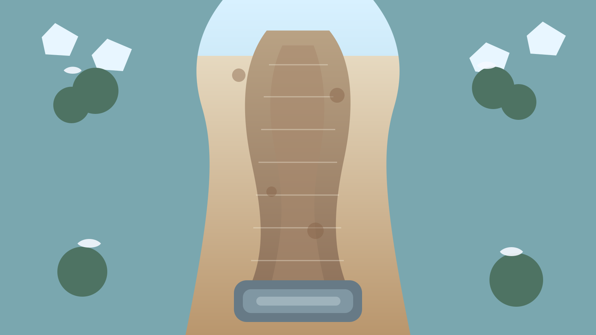
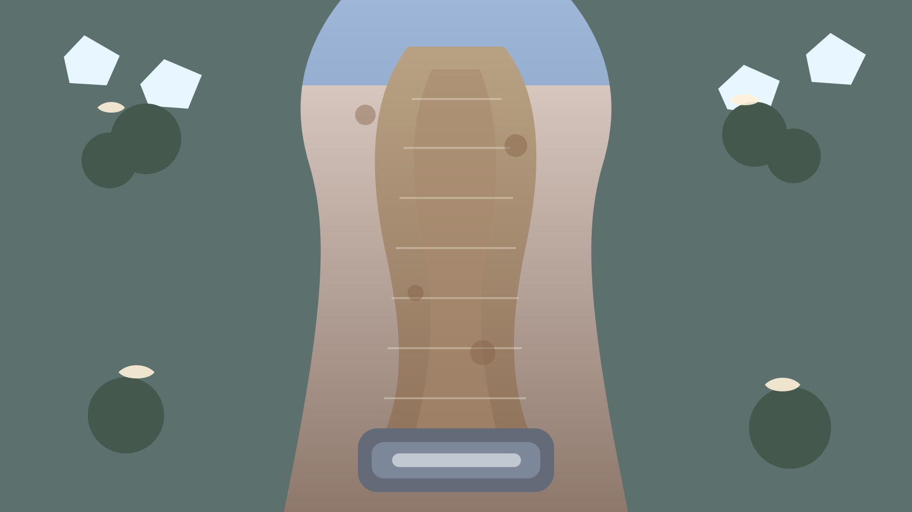
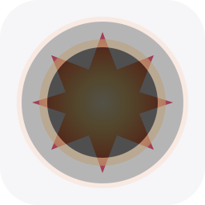

西方魔幻卡通素材增强版
这一版继续围绕你当前游戏的主战斗界面做纯美术升级：保持现有布局和玩法逻辑不变，只强化角色辨识、敌人层级、背景氛围和打击反馈。整体气质仍然重点参考 demo/ui-refresh-preview.html。
英雄图标
8 名英雄已拆成一对一资源，并继续拉开职业区分。
烬火法师火焰 / 爆发
暖色法袍与火焰符号，适合暴击与爆裂定位。
霜语先知冰霜 / 控制
冷色法冠与十字冰徽，强化冻结识别。
潮汐卫士海潮 / 前排
海潮守卫版本，前排辨识比共用冰法图更明确。
刃舞者斩击 / 连击
暖金与酒红配色，速度感和处决感更强。

蚀毒贤者毒性 / 持续
草木药剂系配色，适合持续伤害。
风暴召唤师风雷 / 范围
紫电高光更适合连锁和群体法术。
铁壁守卫护甲 / 坦克
金属灰护甲版本，和火系近战区分开。
曜光祭司圣辉 / 穿透
金白圣辉版本，适合神圣与充能联动。
敌人图标
12 个敌人和首领已拆成一对一资源，并对精英与 Boss 的轮廓做了进一步强化。
岩壳史莱姆杂兵
圆润、低威胁感，适合作为首波基准敌人。
尖刺斥候快速
暖色飞行侦察单位，速度感更强。
壳甲守卫护甲
重壳配色更适合护甲单位。
巢群医者治疗
头部治疗标记更醒目，支援识别更直接。
酸液喷吐者远程
口器和毒泡更适合远程喷吐感。
裂隙粉碎者精英
重型轮廓和大槌标识更有威胁感。
相位幽灵相位
幽紫幽灵风格，和飞行侦察区分开。
灵能医师支援
柔和支援系配色，用于后排治疗单位。
铁甲巨兽重装精英
深铁灰版本，重型感更强。
潮汐巨龙Boss
蓝色首领版，直接拉开首领层级。
霜魂巫妖Boss
冷白幽魂版，法系首领识别更直接。
熔炉典狱官Boss
熔炉暖色版，终局压迫感更强。
图腾图标
三种核心图腾也已经纳入统一美术体系，并接入了右侧图腾信息卡。
毒系图腾持续
更适合中毒充能和腐蚀主题。
暴击图腾爆发
高亮星徽，适合暴击与增幅主题。
冰冻图腾控制
冰纹轮廓更适合冻结和减速主题。
地图背景
保留横屏桌面战场结构，补充薄暮版本，后续可以按章节或关卡主题切换。

幽林路径白昼
当前主战场底图，中央路径清晰，两侧环境收边较轻。

幽林路径薄暮
薄暮版背景更适合高章节点或剧情战。
战斗特效增强包
这轮除了重画原有四类命中特效，还补上了毒雾、圣辉和雷链三类资源。现有项目仍可继续沿用原来的四个命中特效，不需要改动逻辑。
寒霜射线锁定
冰系持续伤害与减速。

奥术爆裂范围
爆裂命中和暴击反馈。
命中火花普攻
短促命中反馈，适合通用普攻。
冻结光环控制
冻结与站位提示。
毒雾扩散持续
适合中毒、腐蚀和范围型持续伤害。
圣辉爆闪神圣
适合神圣命中、充能爆发和祝福类攻击。
雷链弹射连锁
适合风暴召唤师、雷电链击和弹射反馈。